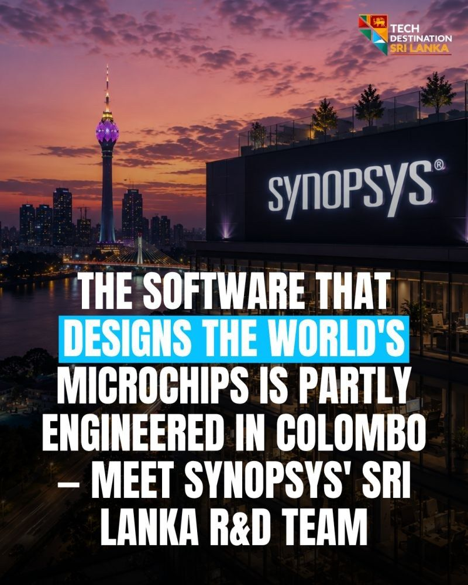

Stories Global companies in Sri Lanka
The software that designs the world's microchips is partly engineered in Colombo. Meet Synopsys Sri Lanka
Synopsys opened its Sri Lanka R&D operation in 2015. The Colombo team works on core chip design and verification products.


- 2015
- R&D operation opened
- 3
- partner universities
- 1
- EDA company in Sri Lanka
Almost every advanced microchip on earth, in your phone, your car, data centers and AI accelerators, is designed using Electronic Design Automation (EDA) software. Synopsys is the global leader in it. It is Nasdaq listed and one of the largest software companies in the world.
Some of that software is engineered in Colombo.
Core product work
Synopsys opened its Sri Lanka R&D operation in 2015. It is the only EDA company to build a presence here. Since then the Colombo team has grown into a substantial R&D operation doing core product development, well beyond support or testing tickets.
Their work includes RTL compilation, logic synthesis, FPGA prototyping through HAPS, and the ZeBu emulation platform. Chip designers use this technology to verify silicon for automotive, 5G, networking, AI and data center applications before a single chip is manufactured. Getting it right saves companies from costly chip respins.
Investing in the pipeline
Synopsys worked with the University of Moratuwa, University of Peradeniya and University of Ruhuna to build Sri Lanka's VLSI (chip design) curriculum, investing in the talent pipeline directly. When chairman Dr. Aart de Geus visited Colombo, he met government leaders to discuss growing the ecosystem further.
Why it matters
Chip design software is about as deep and specialised as technology gets. It goes where the engineering talent can handle it. Synopsys chose Sri Lanka, and Sri Lankan engineers have been delivering at the frontier of semiconductors ever since.
Sources
